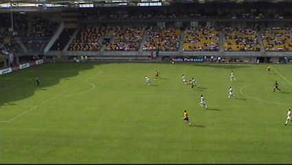
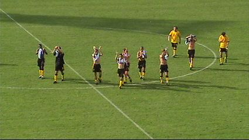

|
Roda JC - Slovan Liberec (1-1) 24 juli 2004 |
Roda JC
- Slovan Liberec (1-1) 24 juli 2004
Een halfuur voor aanvang van de wedstrijd ontmoetten we deze
Liberec-supporter.
Daar sta je dan zonder bier! De Martinair-babies kunnen zelfs een
halfgevuld stadion niet aan.
Circa 50 Tsjechische en Duitse supporters wisten de muziek in
het
PLS wel te waarderen.
DBS was ook present. Proost!
De spelers komen het veld op waarna 11-talfoto's worden
gemaakt.
Kone legt de bal op Van Dijk die doortikt naar Cristiano. Deze
schiet de bal strak in het doel: 1-0 (6').
De optimisten roepen 10-10-10....
Spandoek voor de olifanten die Roda kennelijk heeft.
Van Dijk in duel met Polak.
De Spaanse scheidsrechter die opzichtig tegen Roda fluit is
hier op
zoek naar zijn gele kaart die hij verloren heeft, maar waar?
Een speler van Liberec heeft hem gevonden en overhandigt het
onheilspapier dat bestemd is voor Van Dijk. A-W-H !!
Drukte in het Rodadoel na een van de vele corners van Liberec.
In de tweede helft is er een ballonnenactie in het gastenvak.
De Liberec-bank zit er luchtig bij.
Deze "schwalbe" wordt beloond met een gele kaart.

Kansen zat voor Roda maar de bal wilt er weer eens niet in.
En zo speelt Roda in de verlenging opeens tegen Vitesse.....
De Martinair-babies hebben hun loketten al gesloten en zo
blijft de
dorst naar een biertje evengroot als de dorst naar de bevrijdende
treffer.
Die bevrijdende treffer valt in de 109e minuut, echter aan de
verkeerde kant want de doelpuntenmaker heet Holosko: 1-1.
Feest bij de Tsjechen die alvast kunnen gaan sparen voor een
trip
naar Nantes.
De verslagenheid is groot bij spelers en publiek.

Danke-Bitte! Er komen nieuwe kansen. Op 7 augustus wacht UDI....
Aansluitend volgde de alternatieve open dag >>>